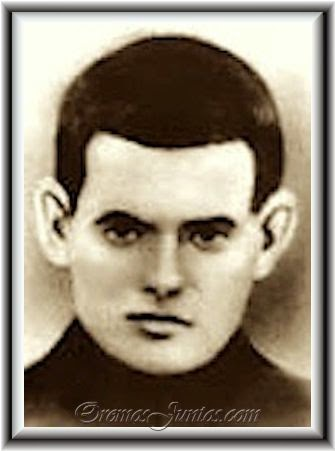
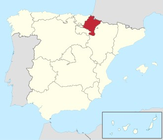
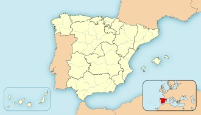
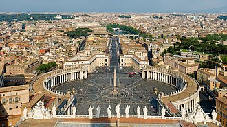

Biografía
David Carlos de Vergara Marañón nació el 29 de diciembre de 1907 en Asarta, Navarra, España. Su nombre religioso fue David del Santísimo Sacramento. Formó parte de la Orden de las Escuelas Pías y dedicó su vida al servicio de Dios y de la educación cristiana.

Vocación y Vida Escolapia
Ingresó a la vida escolapia aun cuando su familia no estaba totalmente de acuerdo con su decisión. Se destacó por su humildad, su espíritu de oración y su disposición para ayudar a los demás.
Realizaba tareas sencillas dentro de la comunidad, como el trabajo en la huerta y la cocina. Su ejemplo muestra que el servicio cotidiano también es una forma de vivir la fe.
Línea de Tiempo
- 29 de diciembre de 1907: Nace en Asarta, Navarra.
- 1930: Ingresa a la Orden Escolapia con 23 años de edad.
- 1930-1936: Desarrolla tareas de servicio y formación.
- 28 de julio de 1936: Muere mártir en Gabasa, Huesca.
- 1 de octubre de 1995: Es beatificado por Juan Pablo II.
Martirio y Beatificación
Durante la Guerra Civil Española fue perseguido por su condición de religioso. Tuvo la oportunidad de abandonar su identidad escolapia para salvarse, pero permaneció fiel a su fe.
Fue asesinado el 28 de julio de 1936 en Gabasa, Huesca. Debido a su testimonio de fidelidad cristiana, la Iglesia Católica lo reconoció como mártir.
El 1 de octubre de 1995 fue beatificado por el Papa Juan Pablo II.
Legado e Influencia
El Beato David Carlos es recordado por su humildad, compromiso y valentía. Su vida refleja los valores promovidos por las Escuelas Pías: educación, evangelización, servicio y amor al prójimo.
Su ejemplo invita a mantener la fidelidad a los propios valores incluso en situaciones difíciles.
Galería de Imágenes

Asarta, Navarra, España.

Gabasa, Huesca, España.

Plaza San Pedro, Ciudad del Vaticano, Italia.
¿Cuánto aprendiste sobre el Beato David?
Respondé las preguntas y comprobá cuánto recordás de su vida.